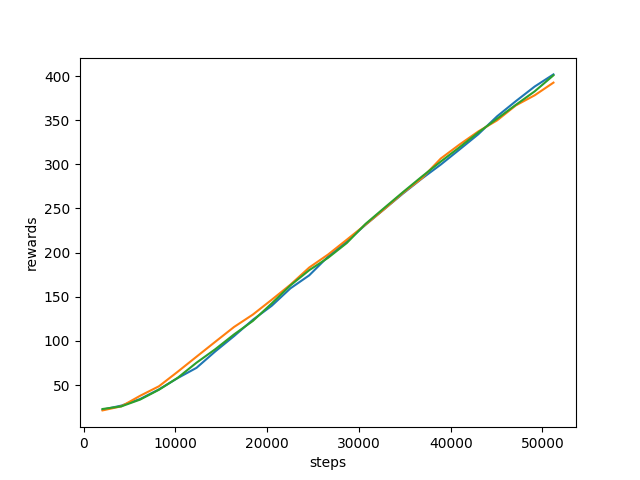

How to export/import data (rlberry data, tensorboard data, …)?¶
How to extract data from the WriterData?¶
rlberry provides tools displaying information about the training of an agent. Some of these tools are visible on the visualization page (from User Guide).
But maybe you have your own favorite tool, and would like to use it. rlberry allows you to export the training data as dataframe, to be used with other tools.
To show how it works with an example, here is a code training PPO from stablebaselines3 on CartPole environment via rlberry :
from rlberry.envs import gym_make
from stable_baselines3 import PPO
from rlberry.agents.stable_baselines import StableBaselinesAgent
from rlberry.manager import ExperimentManager, plot_writer_data, read_writer_data
import matplotlib.pyplot as plt
env_ctor, env_kwargs = gym_make, dict(id="CartPole-v1")
manager = ExperimentManager(
StableBaselinesAgent,
(env_ctor, env_kwargs),
agent_name="PPO",
fit_budget=5e4,
init_kwargs={"algo_cls": PPO, "policy": "MlpPolicy", "verbose": 0},
n_fit=3,
)
manager.fit()
[INFO] 15:58: Running ExperimentManager fit() for PPO with n_fit = 3 and max_workers = None.
[INFO] 15:58: agent_name worker time/iterations max_global_step
PPO 1 1 2048
[INFO] 15:58: agent_name worker time/iterations max_global_step
PPO 2 1 2048
[INFO] 15:58: agent_name worker time/iterations max_global_step
PPO 0 1 2048
[INFO] 15:58: [PPO[worker: 1]] | max_global_step = 4096 | time/iterations = 1 | rollout/ep_rew_mean = 23.569767441860463 | rollout/ep_len_mean = 23.569767441860463 | time/fps = 591 | time/time_elapsed = 3 | time/total_timesteps = 2048 | train/learning_rate = 0.0003 |
[INFO] 15:58: [PPO[worker: 2]] | max_global_step = 4096 | time/iterations = 1 | rollout/ep_rew_mean = 21.903225806451612 | rollout/ep_len_mean = 21.903225806451612 | time/fps = 567 | time/time_elapsed = 3 | time/total_timesteps = 2048 | train/learning_rate = 0.0003 |
[INFO] 15:58: [PPO[worker: 0]] | max_global_step = 4096 | time/iterations = 1 | rollout/ep_rew_mean = 23.49425287356322 | rollout/ep_len_mean = 23.49425287356322 | time/fps = 557 | time/time_elapsed = 3 | time/total_timesteps = 2048 | train/learning_rate = 0.0003 |
[INFO] 15:59: [PPO[worker: 1]] | max_global_step = 6144 | time/iterations = 2 | rollout/ep_rew_mean = 26.94 | rollout/ep_len_mean = 26.94 | time/fps = 437 | time/time_elapsed = 9 | time/total_timesteps = 4096 | train/learning_rate = 0.0003 | train/entropy_loss = -0.6862980721518397 | train/policy_gradient_loss = -0.016145382329705173 | train/value_loss = 57.95402302145958 | train/approx_kl = 0.009136519394814968 | train/clip_fraction = 0.1068359375 | train/loss = 6.268213748931885 | train/explained_variance = 0.00011879205703735352 | train/n_updates = 10 | train/clip_range = 0.2 |
[INFO] 15:59: [PPO[worker: 2]] | max_global_step = 6144 | time/iterations = 2 | rollout/ep_rew_mean = 26.84 | rollout/ep_len_mean = 26.84 | time/fps = 429 | time/time_elapsed = 9 | time/total_timesteps = 4096 | train/learning_rate = 0.0003 | train/entropy_loss = -0.6861314654350281 | train/policy_gradient_loss = -0.016842093877494337 | train/value_loss = 50.17323541939258 | train/approx_kl = 0.007978597655892372 | train/clip_fraction = 0.1025390625 | train/loss = 5.8147406578063965 | train/explained_variance = 0.0003063678741455078 | train/n_updates = 10 | train/clip_range = 0.2 |
[INFO] 15:59: [PPO[worker: 0]] | max_global_step = 6144 | time/iterations = 2 | rollout/ep_rew_mean = 28.75 | rollout/ep_len_mean = 28.75 | time/fps = 426 | time/time_elapsed = 9 | time/total_timesteps = 4096 | train/learning_rate = 0.0003 | train/entropy_loss = -0.6855484075844288 | train/policy_gradient_loss = -0.015410382760455832 | train/value_loss = 61.32087602615356 | train/approx_kl = 0.008056383579969406 | train/clip_fraction = 0.105224609375 | train/loss = 10.251166343688965 | train/explained_variance = 0.012730419635772705 | train/n_updates = 10 | train/clip_range = 0.2 |
[INFO] 15:59: [PPO[worker: 1]] | max_global_step = 8192 | time/iterations = 3 | rollout/ep_rew_mean = 36.85 | rollout/ep_len_mean = 36.85 | time/fps = 409 | time/time_elapsed = 14 | time/total_timesteps = 6144 | train/learning_rate = 0.0003 | train/entropy_loss = -0.6685062969103456 | train/policy_gradient_loss = -0.014946110408345703 | train/value_loss = 39.33342697024345 | train/approx_kl = 0.008881180547177792 | train/clip_fraction = 0.060693359375 | train/loss = 11.630510330200195 | train/explained_variance = 0.1108359694480896 | train/n_updates = 20 | train/clip_range = 0.2 |
[INFO] 15:59: [PPO[worker: 2]] | max_global_step = 8192 | time/iterations = 3 | rollout/ep_rew_mean = 37.18 | rollout/ep_len_mean = 37.18 | time/fps = 403 | time/time_elapsed = 15 | time/total_timesteps = 6144 | train/learning_rate = 0.0003 | train/entropy_loss = -0.6661150485277176 | train/policy_gradient_loss = -0.013149463082663715 | train/value_loss = 38.683698976039885 | train/approx_kl = 0.007977155968546867 | train/clip_fraction = 0.043798828125 | train/loss = 13.9081449508667 | train/explained_variance = 0.05941134691238403 | train/n_updates = 20 | train/clip_range = 0.2 |
[INFO] 15:59: [PPO[worker: 0]] | max_global_step = 8192 | time/iterations = 3 | rollout/ep_rew_mean = 37.65 | rollout/ep_len_mean = 37.65 | time/fps = 402 | time/time_elapsed = 15 | time/total_timesteps = 6144 | train/learning_rate = 0.0003 | train/entropy_loss = -0.6675648905336857 | train/policy_gradient_loss = -0.01585175626023556 | train/value_loss = 39.83039126396179 | train/approx_kl = 0.008422331884503365 | train/clip_fraction = 0.05068359375 | train/loss = 18.283363342285156 | train/explained_variance = 0.06431382894515991 | train/n_updates = 20 | train/clip_range = 0.2 |
[INFO] 15:59: [PPO[worker: 1]] | max_global_step = 10240 | time/iterations = 4 | rollout/ep_rew_mean = 45.9 | rollout/ep_len_mean = 45.9 | time/fps = 397 | time/time_elapsed = 20 | time/total_timesteps = 8192 | train/learning_rate = 0.0003 | train/entropy_loss = -0.6372709095478057 | train/policy_gradient_loss = -0.021793167035502846 | train/value_loss = 56.082052528858185 | train/approx_kl = 0.008312474004924297 | train/clip_fraction = 0.09052734375 | train/loss = 21.487403869628906 | train/explained_variance = 0.29079967737197876 | train/n_updates = 30 | train/clip_range = 0.2 |
[INFO] 15:59: [PPO[worker: 2]] | max_global_step = 10240 | time/iterations = 4 | rollout/ep_rew_mean = 48.35 | rollout/ep_len_mean = 48.35 | time/fps = 392 | time/time_elapsed = 20 | time/total_timesteps = 8192 | train/learning_rate = 0.0003 | train/entropy_loss = -0.6271074561402201 | train/policy_gradient_loss = -0.021605250079301187 | train/value_loss = 53.17835917472839 | train/approx_kl = 0.01045585609972477 | train/clip_fraction = 0.107275390625 | train/loss = 20.300893783569336 | train/explained_variance = 0.24486440420150757 | train/n_updates = 30 | train/clip_range = 0.2 |
[INFO] 15:59: [PPO[worker: 0]] | max_global_step = 10240 | time/iterations = 4 | rollout/ep_rew_mean = 49.44 | rollout/ep_len_mean = 49.44 | time/fps = 389 | time/time_elapsed = 21 | time/total_timesteps = 8192 | train/learning_rate = 0.0003 | train/entropy_loss = -0.641490114107728 | train/policy_gradient_loss = -0.01604906824504724 | train/value_loss = 56.91851507425308 | train/approx_kl = 0.007528345100581646 | train/clip_fraction = 0.0734375 | train/loss = 23.153453826904297 | train/explained_variance = 0.22841238975524902 | train/n_updates = 30 | train/clip_range = 0.2 |
[INFO] 15:59: [PPO[worker: 1]] | max_global_step = 12288 | time/iterations = 5 | rollout/ep_rew_mean = 61.62 | rollout/ep_len_mean = 61.62 | time/fps = 374 | time/time_elapsed = 27 | time/total_timesteps = 10240 | train/learning_rate = 0.0003 | train/entropy_loss = -0.6044564859941601 | train/policy_gradient_loss = -0.016754490803577937 | train/value_loss = 69.31612868309021 | train/approx_kl = 0.009068363346159458 | train/clip_fraction = 0.078857421875 | train/loss = 30.16673469543457 | train/explained_variance = 0.30177778005599976 | train/n_updates = 40 | train/clip_range = 0.2 |
[INFO] 15:59: [PPO[worker: 2]] | max_global_step = 12288 | time/iterations = 5 | rollout/ep_rew_mean = 63.61 | rollout/ep_len_mean = 63.61 | time/fps = 371 | time/time_elapsed = 27 | time/total_timesteps = 10240 | train/learning_rate = 0.0003 | train/entropy_loss = -0.6121436970308423 | train/policy_gradient_loss = -0.014887585233373102 | train/value_loss = 62.94282633662224 | train/approx_kl = 0.005902732722461224 | train/clip_fraction = 0.049267578125 | train/loss = 24.8435115814209 | train/explained_variance = 0.21425354480743408 | train/n_updates = 40 | train/clip_range = 0.2 |
[INFO] 15:59: [PPO[worker: 0]] | max_global_step = 12288 | time/iterations = 5 | rollout/ep_rew_mean = 62.2 | rollout/ep_len_mean = 62.2 | time/fps = 368 | time/time_elapsed = 27 | time/total_timesteps = 10240 | train/learning_rate = 0.0003 | train/entropy_loss = -0.621853212080896 | train/policy_gradient_loss = -0.01637536641501356 | train/value_loss = 62.13811606168747 | train/approx_kl = 0.008492568507790565 | train/clip_fraction = 0.06396484375 | train/loss = 25.353282928466797 | train/explained_variance = 0.31684231758117676 | train/n_updates = 40 | train/clip_range = 0.2 |
[INFO] 15:59: [PPO[worker: 1]] | max_global_step = 14336 | time/iterations = 6 | rollout/ep_rew_mean = 76.07 | rollout/ep_len_mean = 76.07 | time/fps = 367 | time/time_elapsed = 33 | time/total_timesteps = 12288 | train/learning_rate = 0.0003 | train/entropy_loss = -0.5713022822514177 | train/policy_gradient_loss = -0.01559052456432255 | train/value_loss = 63.737575674057005 | train/approx_kl = 0.00888746790587902 | train/clip_fraction = 0.071826171875 | train/loss = 23.2188663482666 | train/explained_variance = 0.43151962757110596 | train/n_updates = 50 | train/clip_range = 0.2 |
[INFO] 15:59: [PPO[worker: 2]] | max_global_step = 14336 | time/iterations = 6 | rollout/ep_rew_mean = 78.83 | rollout/ep_len_mean = 78.83 | time/fps = 365 | time/time_elapsed = 33 | time/total_timesteps = 12288 | train/learning_rate = 0.0003 | train/entropy_loss = -0.5959413398057223 | train/policy_gradient_loss = -0.01293433145910967 | train/value_loss = 63.95801417827606 | train/approx_kl = 0.007563581224530935 | train/clip_fraction = 0.06982421875 | train/loss = 20.49068832397461 | train/explained_variance = 0.40706634521484375 | train/n_updates = 50 | train/clip_range = 0.2 |
[INFO] 15:59: [PPO[worker: 0]] | max_global_step = 14336 | time/iterations = 6 | rollout/ep_rew_mean = 79.43 | rollout/ep_len_mean = 79.43 | time/fps = 362 | time/time_elapsed = 33 | time/total_timesteps = 12288 | train/learning_rate = 0.0003 | train/entropy_loss = -0.6087406625971198 | train/policy_gradient_loss = -0.011938219325384126 | train/value_loss = 66.20582329630852 | train/approx_kl = 0.005129554774612188 | train/clip_fraction = 0.04287109375 | train/loss = 26.536352157592773 | train/explained_variance = 0.3696613907814026 | train/n_updates = 50 | train/clip_range = 0.2 |
[INFO] 15:59: [PPO[worker: 1]] | max_global_step = 16384 | time/iterations = 7 | rollout/ep_rew_mean = 94.75 | rollout/ep_len_mean = 94.75 | time/fps = 363 | time/time_elapsed = 39 | time/total_timesteps = 14336 | train/learning_rate = 0.0003 | train/entropy_loss = -0.5794724302366376 | train/policy_gradient_loss = -0.004287737552658655 | train/value_loss = 40.43672263324261 | train/approx_kl = 0.0037438003346323967 | train/clip_fraction = 0.014404296875 | train/loss = 5.200799465179443 | train/explained_variance = 0.6620278060436249 | train/n_updates = 60 | train/clip_range = 0.2 |
[INFO] 15:59: [PPO[worker: 2]] | max_global_step = 16384 | time/iterations = 7 | rollout/ep_rew_mean = 93.41 | rollout/ep_len_mean = 93.41 | time/fps = 360 | time/time_elapsed = 39 | time/total_timesteps = 14336 | train/learning_rate = 0.0003 | train/entropy_loss = -0.5922138599678874 | train/policy_gradient_loss = -0.012010189255670411 | train/value_loss = 57.09716731309891 | train/approx_kl = 0.007144401781260967 | train/clip_fraction = 0.075146484375 | train/loss = 14.848328590393066 | train/explained_variance = 0.5530484616756439 | train/n_updates = 60 | train/clip_range = 0.2 |
[INFO] 15:59: [PPO[worker: 0]] | max_global_step = 16384 | time/iterations = 7 | rollout/ep_rew_mean = 93.76 | rollout/ep_len_mean = 93.76 | time/fps = 357 | time/time_elapsed = 40 | time/total_timesteps = 14336 | train/learning_rate = 0.0003 | train/entropy_loss = -0.6040949983522296 | train/policy_gradient_loss = -0.009169524490425828 | train/value_loss = 40.84913797974586 | train/approx_kl = 0.007860680110752583 | train/clip_fraction = 0.072705078125 | train/loss = 9.374231338500977 | train/explained_variance = 0.7407508194446564 | train/n_updates = 60 | train/clip_range = 0.2 |
[INFO] 15:59: [PPO[worker: 1]] | max_global_step = 18432 | time/iterations = 8 | rollout/ep_rew_mean = 111.61 | rollout/ep_len_mean = 111.61 | time/fps = 360 | time/time_elapsed = 45 | time/total_timesteps = 16384 | train/learning_rate = 0.0003 | train/entropy_loss = -0.5607249280437827 | train/policy_gradient_loss = -0.002986471042095218 | train/value_loss = 33.21346059292555 | train/approx_kl = 0.003013045061379671 | train/clip_fraction = 0.011279296875 | train/loss = 8.299112319946289 | train/explained_variance = 0.8296276032924652 | train/n_updates = 70 | train/clip_range = 0.2 |
[INFO] 15:59: [PPO[worker: 2]] | max_global_step = 18432 | time/iterations = 8 | rollout/ep_rew_mean = 112.21 | rollout/ep_len_mean = 112.21 | time/fps = 358 | time/time_elapsed = 45 | time/total_timesteps = 16384 | train/learning_rate = 0.0003 | train/entropy_loss = -0.5921528477221727 | train/policy_gradient_loss = -0.01051775121013634 | train/value_loss = 39.23670785278082 | train/approx_kl = 0.005722516216337681 | train/clip_fraction = 0.06689453125 | train/loss = 4.937105655670166 | train/explained_variance = 0.7620555758476257 | train/n_updates = 70 | train/clip_range = 0.2 |
[INFO] 15:59: [PPO[worker: 0]] | max_global_step = 18432 | time/iterations = 8 | rollout/ep_rew_mean = 109.93 | rollout/ep_len_mean = 109.93 | time/fps = 355 | time/time_elapsed = 46 | time/total_timesteps = 16384 | train/learning_rate = 0.0003 | train/entropy_loss = -0.5929792949929833 | train/policy_gradient_loss = -0.005616791581269353 | train/value_loss = 63.9369278550148 | train/approx_kl = 0.0032515935599803925 | train/clip_fraction = 0.02109375 | train/loss = 17.186660766601562 | train/explained_variance = 0.6016848087310791 | train/n_updates = 70 | train/clip_range = 0.2 |
[INFO] 15:59: [PPO[worker: 1]] | max_global_step = 20480 | time/iterations = 9 | rollout/ep_rew_mean = 125.22 | rollout/ep_len_mean = 125.22 | time/fps = 355 | time/time_elapsed = 51 | time/total_timesteps = 18432 | train/learning_rate = 0.0003 | train/entropy_loss = -0.5653722988441586 | train/policy_gradient_loss = -0.008493624679249478 | train/value_loss = 38.953543305397034 | train/approx_kl = 0.005177437327802181 | train/clip_fraction = 0.07109375 | train/loss = 14.79820442199707 | train/explained_variance = 0.7749437093734741 | train/n_updates = 80 | train/clip_range = 0.2 |
[INFO] 15:59: [PPO[worker: 2]] | max_global_step = 20480 | time/iterations = 9 | rollout/ep_rew_mean = 130.25 | rollout/ep_len_mean = 130.25 | time/fps = 353 | time/time_elapsed = 52 | time/total_timesteps = 18432 | train/learning_rate = 0.0003 | train/entropy_loss = -0.5738503985106945 | train/policy_gradient_loss = -0.005740263756888453 | train/value_loss = 72.06800128221512 | train/approx_kl = 0.006686339154839516 | train/clip_fraction = 0.03720703125 | train/loss = 7.82557487487793 | train/explained_variance = 0.33640867471694946 | train/n_updates = 80 | train/clip_range = 0.2 |
[INFO] 15:59: [PPO[worker: 0]] | max_global_step = 20480 | time/iterations = 9 | rollout/ep_rew_mean = 128.55 | rollout/ep_len_mean = 128.55 | time/fps = 351 | time/time_elapsed = 52 | time/total_timesteps = 18432 | train/learning_rate = 0.0003 | train/entropy_loss = -0.5821122424677014 | train/policy_gradient_loss = -0.0035777818571659735 | train/value_loss = 53.145361164212225 | train/approx_kl = 0.004387532360851765 | train/clip_fraction = 0.018701171875 | train/loss = 13.294953346252441 | train/explained_variance = 0.6190232038497925 | train/n_updates = 80 | train/clip_range = 0.2 |
[INFO] 15:59: [PPO[worker: 1]] | max_global_step = 22528 | time/iterations = 10 | rollout/ep_rew_mean = 141.68 | rollout/ep_len_mean = 141.68 | time/fps = 354 | time/time_elapsed = 57 | time/total_timesteps = 20480 | train/learning_rate = 0.0003 | train/entropy_loss = -0.5748784447088837 | train/policy_gradient_loss = -0.008402446379477624 | train/value_loss = 19.196025171130895 | train/approx_kl = 0.005493971519172192 | train/clip_fraction = 0.05244140625 | train/loss = 3.0958304405212402 | train/explained_variance = 0.9052915200591087 | train/n_updates = 90 | train/clip_range = 0.2 |
[INFO] 15:59: [PPO[worker: 2]] | max_global_step = 22528 | time/iterations = 10 | rollout/ep_rew_mean = 146.91 | rollout/ep_len_mean = 146.91 | time/fps = 352 | time/time_elapsed = 58 | time/total_timesteps = 20480 | train/learning_rate = 0.0003 | train/entropy_loss = -0.55838915547356 | train/policy_gradient_loss = -0.008732947133103153 | train/value_loss = 48.26576453149319 | train/approx_kl = 0.005845913663506508 | train/clip_fraction = 0.065673828125 | train/loss = 11.673324584960938 | train/explained_variance = 0.7672396898269653 | train/n_updates = 90 | train/clip_range = 0.2 |
[INFO] 15:59: [PPO[worker: 0]] | max_global_step = 22528 | time/iterations = 10 | rollout/ep_rew_mean = 143.68 | rollout/ep_len_mean = 143.68 | time/fps = 351 | time/time_elapsed = 58 | time/total_timesteps = 20480 | train/learning_rate = 0.0003 | train/entropy_loss = -0.5832941999658943 | train/policy_gradient_loss = -0.010998867846501526 | train/value_loss = 21.56470604687929 | train/approx_kl = 0.006126352585852146 | train/clip_fraction = 0.073388671875 | train/loss = 3.2158937454223633 | train/explained_variance = 0.8782470673322678 | train/n_updates = 90 | train/clip_range = 0.2 |
[INFO] 15:59: [PPO[worker: 1]] | max_global_step = 24576 | time/iterations = 11 | rollout/ep_rew_mean = 157.38 | rollout/ep_len_mean = 157.38 | time/fps = 354 | time/time_elapsed = 63 | time/total_timesteps = 22528 | train/learning_rate = 0.0003 | train/entropy_loss = -0.5647322304546833 | train/policy_gradient_loss = -0.007764048119133804 | train/value_loss = 52.263426271080974 | train/approx_kl = 0.007562276907265186 | train/clip_fraction = 0.090771484375 | train/loss = 12.511579513549805 | train/explained_variance = 0.777026578783989 | train/n_updates = 100 | train/clip_range = 0.2 |
[INFO] 15:59: [PPO[worker: 2]] | max_global_step = 24576 | time/iterations = 11 | rollout/ep_rew_mean = 164.8 | rollout/ep_len_mean = 164.8 | time/fps = 352 | time/time_elapsed = 63 | time/total_timesteps = 22528 | train/learning_rate = 0.0003 | train/entropy_loss = -0.5593959849327803 | train/policy_gradient_loss = -0.0112069135720958 | train/value_loss = 45.52521513402462 | train/approx_kl = 0.012146038934588432 | train/clip_fraction = 0.162939453125 | train/loss = 35.99325180053711 | train/explained_variance = 0.779657244682312 | train/n_updates = 100 | train/clip_range = 0.2 |
[INFO] 15:59: [PPO[worker: 0]] | max_global_step = 24576 | time/iterations = 11 | rollout/ep_rew_mean = 163.31 | rollout/ep_len_mean = 163.31 | time/fps = 351 | time/time_elapsed = 64 | time/total_timesteps = 22528 | train/learning_rate = 0.0003 | train/entropy_loss = -0.5535886317491532 | train/policy_gradient_loss = -0.003764605871401727 | train/value_loss = 76.87041089832783 | train/approx_kl = 0.007615496404469013 | train/clip_fraction = 0.03154296875 | train/loss = 45.99373245239258 | train/explained_variance = 0.35959136486053467 | train/n_updates = 100 | train/clip_range = 0.2 |
[INFO] 16:00: [PPO[worker: 1]] | max_global_step = 26624 | time/iterations = 12 | rollout/ep_rew_mean = 175.06 | rollout/ep_len_mean = 175.06 | time/fps = 353 | time/time_elapsed = 69 | time/total_timesteps = 24576 | train/learning_rate = 0.0003 | train/entropy_loss = -0.5552531754598021 | train/policy_gradient_loss = -0.005408551605069078 | train/value_loss = 53.160164260864256 | train/approx_kl = 0.005178069695830345 | train/clip_fraction = 0.025634765625 | train/loss = 37.7170295715332 | train/explained_variance = 0.7826626151800156 | train/n_updates = 110 | train/clip_range = 0.2 |
[INFO] 16:00: [PPO[worker: 2]] | max_global_step = 26624 | time/iterations = 12 | rollout/ep_rew_mean = 182.79 | rollout/ep_len_mean = 182.79 | time/fps = 351 | time/time_elapsed = 69 | time/total_timesteps = 24576 | train/learning_rate = 0.0003 | train/entropy_loss = -0.5358171337284148 | train/policy_gradient_loss = -0.00488179410531302 | train/value_loss = 8.18989806524478 | train/approx_kl = 0.0034808891359716654 | train/clip_fraction = 0.06181640625 | train/loss = 0.12967732548713684 | train/explained_variance = 0.16228169202804565 | train/n_updates = 110 | train/clip_range = 0.2 |
[INFO] 16:00: [PPO[worker: 0]] | max_global_step = 26624 | time/iterations = 12 | rollout/ep_rew_mean = 178.05 | rollout/ep_len_mean = 178.05 | time/fps = 350 | time/time_elapsed = 70 | time/total_timesteps = 24576 | train/learning_rate = 0.0003 | train/entropy_loss = -0.5562285710126161 | train/policy_gradient_loss = -0.004001504971529357 | train/value_loss = 32.59976389706135 | train/approx_kl = 0.002194597851485014 | train/clip_fraction = 0.021923828125 | train/loss = 4.274383068084717 | train/explained_variance = 0.8627262711524963 | train/n_updates = 110 | train/clip_range = 0.2 |
[INFO] 16:00: [PPO[worker: 1]] | max_global_step = 28672 | time/iterations = 13 | rollout/ep_rew_mean = 192.64 | rollout/ep_len_mean = 192.64 | time/fps = 353 | time/time_elapsed = 75 | time/total_timesteps = 26624 | train/learning_rate = 0.0003 | train/entropy_loss = -0.5598000731319189 | train/policy_gradient_loss = -0.004672619019402191 | train/value_loss = 27.96599825024605 | train/approx_kl = 0.0037293194327503443 | train/clip_fraction = 0.034814453125 | train/loss = 11.138860702514648 | train/explained_variance = 0.9212513640522957 | train/n_updates = 120 | train/clip_range = 0.2 |
[INFO] 16:00: [PPO[worker: 2]] | max_global_step = 28672 | time/iterations = 13 | rollout/ep_rew_mean = 201.19 | rollout/ep_len_mean = 201.19 | time/fps = 351 | time/time_elapsed = 75 | time/total_timesteps = 26624 | train/learning_rate = 0.0003 | train/entropy_loss = -0.5327114884741604 | train/policy_gradient_loss = -0.002263979368581204 | train/value_loss = 62.354254606366155 | train/approx_kl = 0.0018954614643007517 | train/clip_fraction = 0.00458984375 | train/loss = 49.1828498840332 | train/explained_variance = 0.01690804958343506 | train/n_updates = 120 | train/clip_range = 0.2 |
[INFO] 16:00: [PPO[worker: 0]] | max_global_step = 28672 | time/iterations = 13 | rollout/ep_rew_mean = 194.91 | rollout/ep_len_mean = 194.91 | time/fps = 350 | time/time_elapsed = 76 | time/total_timesteps = 26624 | train/learning_rate = 0.0003 | train/entropy_loss = -0.5350399187766015 | train/policy_gradient_loss = -0.010988622946024406 | train/value_loss = 32.65103582441807 | train/approx_kl = 0.012016495689749718 | train/clip_fraction = 0.100732421875 | train/loss = 5.403335094451904 | train/explained_variance = 0.8912321701645851 | train/n_updates = 120 | train/clip_range = 0.2 |
[INFO] 16:00: [PPO[worker: 1]] | max_global_step = 30720 | time/iterations = 14 | rollout/ep_rew_mean = 208.91 | rollout/ep_len_mean = 208.91 | time/fps = 350 | time/time_elapsed = 81 | time/total_timesteps = 28672 | train/learning_rate = 0.0003 | train/entropy_loss = -0.5623490344733 | train/policy_gradient_loss = -0.007931908047612523 | train/value_loss = 25.936047033965586 | train/approx_kl = 0.004620042629539967 | train/clip_fraction = 0.0498046875 | train/loss = 2.1860785484313965 | train/explained_variance = 0.8344163149595261 | train/n_updates = 130 | train/clip_range = 0.2 |
[INFO] 16:00: [PPO[worker: 2]] | max_global_step = 30720 | time/iterations = 14 | rollout/ep_rew_mean = 218.48 | rollout/ep_len_mean = 218.48 | time/fps = 349 | time/time_elapsed = 82 | time/total_timesteps = 28672 | train/learning_rate = 0.0003 | train/entropy_loss = -0.514452669210732 | train/policy_gradient_loss = -0.0014171435825119261 | train/value_loss = 4.242323934612796 | train/approx_kl = 0.006443873047828674 | train/clip_fraction = 0.032568359375 | train/loss = 0.14281976222991943 | train/explained_variance = -0.007233858108520508 | train/n_updates = 130 | train/clip_range = 0.2 |
[INFO] 16:00: [PPO[worker: 0]] | max_global_step = 30720 | time/iterations = 14 | rollout/ep_rew_mean = 211.74 | rollout/ep_len_mean = 211.74 | time/fps = 348 | time/time_elapsed = 82 | time/total_timesteps = 28672 | train/learning_rate = 0.0003 | train/entropy_loss = -0.5367143749259412 | train/policy_gradient_loss = -0.01454816997575108 | train/value_loss = 10.89514188542962 | train/approx_kl = 0.009338829666376114 | train/clip_fraction = 0.122314453125 | train/loss = 5.663129806518555 | train/explained_variance = 0.9458933025598526 | train/n_updates = 130 | train/clip_range = 0.2 |
[INFO] 16:00: [PPO[worker: 1]] | max_global_step = 32768 | time/iterations = 15 | rollout/ep_rew_mean = 225.59 | rollout/ep_len_mean = 225.59 | time/fps = 349 | time/time_elapsed = 87 | time/total_timesteps = 30720 | train/learning_rate = 0.0003 | train/entropy_loss = -0.539276737626642 | train/policy_gradient_loss = -0.0037407161165901926 | train/value_loss = 26.433760127052665 | train/approx_kl = 0.013978826813399792 | train/clip_fraction = 0.064990234375 | train/loss = 0.37698429822921753 | train/explained_variance = 0.035490989685058594 | train/n_updates = 140 | train/clip_range = 0.2 |
[INFO] 16:00: [PPO[worker: 2]] | max_global_step = 32768 | time/iterations = 15 | rollout/ep_rew_mean = 235.66 | rollout/ep_len_mean = 235.66 | time/fps = 348 | time/time_elapsed = 88 | time/total_timesteps = 30720 | train/learning_rate = 0.0003 | train/entropy_loss = -0.4973093102686107 | train/policy_gradient_loss = -0.012424326899053994 | train/value_loss = 2.345036637177691 | train/approx_kl = 0.008750807493925095 | train/clip_fraction = 0.106884765625 | train/loss = 0.18800251185894012 | train/explained_variance = 0.7767911404371262 | train/n_updates = 140 | train/clip_range = 0.2 |
[INFO] 16:00: [PPO[worker: 0]] | max_global_step = 32768 | time/iterations = 15 | rollout/ep_rew_mean = 230.19 | rollout/ep_len_mean = 230.19 | time/fps = 346 | time/time_elapsed = 88 | time/total_timesteps = 30720 | train/learning_rate = 0.0003 | train/entropy_loss = -0.5259521684609354 | train/policy_gradient_loss = -0.02139304491574876 | train/value_loss = 4.581413919106126 | train/approx_kl = 0.012810716405510902 | train/clip_fraction = 0.201708984375 | train/loss = 0.7710778713226318 | train/explained_variance = 0.8799830973148346 | train/n_updates = 140 | train/clip_range = 0.2 |
[INFO] 16:00: [PPO[worker: 1]] | max_global_step = 34816 | time/iterations = 16 | rollout/ep_rew_mean = 243.47 | rollout/ep_len_mean = 243.47 | time/fps = 348 | time/time_elapsed = 93 | time/total_timesteps = 32768 | train/learning_rate = 0.0003 | train/entropy_loss = -0.5016440353356302 | train/policy_gradient_loss = -0.005388573392338003 | train/value_loss = 1.6560175356687978 | train/approx_kl = 0.0062754955142736435 | train/clip_fraction = 0.066552734375 | train/loss = 0.09270089864730835 | train/explained_variance = 0.12096387147903442 | train/n_updates = 150 | train/clip_range = 0.2 |
[INFO] 16:00: [PPO[worker: 2]] | max_global_step = 34816 | time/iterations = 16 | rollout/ep_rew_mean = 252.56 | rollout/ep_len_mean = 252.56 | time/fps = 347 | time/time_elapsed = 94 | time/total_timesteps = 32768 | train/learning_rate = 0.0003 | train/entropy_loss = -0.4738074015825987 | train/policy_gradient_loss = -0.0019494367443257943 | train/value_loss = 1.4576879689877387 | train/approx_kl = 0.005790143273770809 | train/clip_fraction = 0.037353515625 | train/loss = 0.18722578883171082 | train/explained_variance = 0.35352087020874023 | train/n_updates = 150 | train/clip_range = 0.2 |
[INFO] 16:00: [PPO[worker: 0]] | max_global_step = 34816 | time/iterations = 16 | rollout/ep_rew_mean = 246.37 | rollout/ep_len_mean = 246.37 | time/fps = 345 | time/time_elapsed = 94 | time/total_timesteps = 32768 | train/learning_rate = 0.0003 | train/entropy_loss = -0.5140718438662588 | train/policy_gradient_loss = -0.0004109115216124337 | train/value_loss = 1.4875038336322177 | train/approx_kl = 0.0043577756732702255 | train/clip_fraction = 0.02763671875 | train/loss = 0.17618514597415924 | train/explained_variance = -0.08825933933258057 | train/n_updates = 150 | train/clip_range = 0.2 |
[INFO] 16:00: [PPO[worker: 1]] | max_global_step = 36864 | time/iterations = 17 | rollout/ep_rew_mean = 257.95 | rollout/ep_len_mean = 257.95 | time/fps = 345 | time/time_elapsed = 100 | time/total_timesteps = 34816 | train/learning_rate = 0.0003 | train/entropy_loss = -0.505179504211992 | train/policy_gradient_loss = -0.0033724807828548363 | train/value_loss = 1.052925960079301 | train/approx_kl = 0.01005391776561737 | train/clip_fraction = 0.107958984375 | train/loss = 0.09074155241250992 | train/explained_variance = -0.022495508193969727 | train/n_updates = 160 | train/clip_range = 0.2 |
[INFO] 16:00: [PPO[worker: 2]] | max_global_step = 36864 | time/iterations = 17 | rollout/ep_rew_mean = 269.16 | rollout/ep_len_mean = 269.16 | time/fps = 343 | time/time_elapsed = 101 | time/total_timesteps = 34816 | train/learning_rate = 0.0003 | train/entropy_loss = -0.48579485388472676 | train/policy_gradient_loss = 4.9661558296065775e-05 | train/value_loss = 0.9125513993494678 | train/approx_kl = 0.005249223671853542 | train/clip_fraction = 0.029833984375 | train/loss = 0.011615638621151447 | train/explained_variance = 0.20920252799987793 | train/n_updates = 160 | train/clip_range = 0.2 |
[INFO] 16:00: [PPO[worker: 0]] | max_global_step = 36864 | time/iterations = 17 | rollout/ep_rew_mean = 262.82 | rollout/ep_len_mean = 262.82 | time/fps = 342 | time/time_elapsed = 101 | time/total_timesteps = 34816 | train/learning_rate = 0.0003 | train/entropy_loss = -0.5235147284343838 | train/policy_gradient_loss = -0.003425118201994337 | train/value_loss = 1.1361884556215955 | train/approx_kl = 0.005556339398026466 | train/clip_fraction = 0.04345703125 | train/loss = 0.04526910558342934 | train/explained_variance = 0.0790131688117981 | train/n_updates = 160 | train/clip_range = 0.2 |
[INFO] 16:00: [PPO[worker: 1]] | max_global_step = 38912 | time/iterations = 18 | rollout/ep_rew_mean = 279.36 | rollout/ep_len_mean = 279.36 | time/fps = 342 | time/time_elapsed = 107 | time/total_timesteps = 36864 | train/learning_rate = 0.0003 | train/entropy_loss = -0.5124423679895699 | train/policy_gradient_loss = -9.320563549408689e-05 | train/value_loss = 0.6837369541579392 | train/approx_kl = 0.0015420113923028111 | train/clip_fraction = 0.011376953125 | train/loss = 0.048248302191495895 | train/explained_variance = 0.026345491409301758 | train/n_updates = 170 | train/clip_range = 0.2 |
[INFO] 16:00: [PPO[worker: 2]] | max_global_step = 38912 | time/iterations = 18 | rollout/ep_rew_mean = 291.19 | rollout/ep_len_mean = 291.19 | time/fps = 341 | time/time_elapsed = 107 | time/total_timesteps = 36864 | train/learning_rate = 0.0003 | train/entropy_loss = -0.49892428508028386 | train/policy_gradient_loss = -0.0013376812363276257 | train/value_loss = 0.5619548875140026 | train/approx_kl = 0.005291177425533533 | train/clip_fraction = 0.031787109375 | train/loss = 0.08444305509328842 | train/explained_variance = -0.06384599208831787 | train/n_updates = 170 | train/clip_range = 0.2 |
[INFO] 16:00: [PPO[worker: 0]] | max_global_step = 38912 | time/iterations = 18 | rollout/ep_rew_mean = 280.12 | rollout/ep_len_mean = 280.12 | time/fps = 339 | time/time_elapsed = 108 | time/total_timesteps = 36864 | train/learning_rate = 0.0003 | train/entropy_loss = -0.5188016330823302 | train/policy_gradient_loss = -0.0005724920614738948 | train/value_loss = 0.6982153896708041 | train/approx_kl = 0.0033194604329764843 | train/clip_fraction = 0.013623046875 | train/loss = 0.05807049572467804 | train/explained_variance = 0.02944713830947876 | train/n_updates = 170 | train/clip_range = 0.2 |
[INFO] 16:00: [PPO[worker: 1]] | max_global_step = 40960 | time/iterations = 19 | rollout/ep_rew_mean = 294.87 | rollout/ep_len_mean = 294.87 | time/fps = 340 | time/time_elapsed = 114 | time/total_timesteps = 38912 | train/learning_rate = 0.0003 | train/entropy_loss = -0.4957636919803917 | train/policy_gradient_loss = -0.004073993970087031 | train/value_loss = 0.4760114259843249 | train/approx_kl = 0.008029351010918617 | train/clip_fraction = 0.062060546875 | train/loss = 0.03772534430027008 | train/explained_variance = 0.0035400986671447754 | train/n_updates = 180 | train/clip_range = 0.2 |
[INFO] 16:00: [PPO[worker: 2]] | max_global_step = 40960 | time/iterations = 19 | rollout/ep_rew_mean = 307.4 | rollout/ep_len_mean = 307.4 | time/fps = 338 | time/time_elapsed = 114 | time/total_timesteps = 38912 | train/learning_rate = 0.0003 | train/entropy_loss = -0.5157848816365004 | train/policy_gradient_loss = -0.0030665539947221988 | train/value_loss = 0.336146240857488 | train/approx_kl = 0.006352574564516544 | train/clip_fraction = 0.05068359375 | train/loss = 0.04088807851076126 | train/explained_variance = 0.8884187638759613 | train/n_updates = 180 | train/clip_range = 0.2 |
[INFO] 16:00: [PPO[worker: 0]] | max_global_step = 40960 | time/iterations = 19 | rollout/ep_rew_mean = 294.72 | rollout/ep_len_mean = 294.72 | time/fps = 337 | time/time_elapsed = 115 | time/total_timesteps = 38912 | train/learning_rate = 0.0003 | train/entropy_loss = -0.5111317873932422 | train/policy_gradient_loss = -0.0015660247969208284 | train/value_loss = 0.431194728880655 | train/approx_kl = 0.0047972844913601875 | train/clip_fraction = 0.030078125 | train/loss = 0.02516128309071064 | train/explained_variance = -0.002133488655090332 | train/n_updates = 180 | train/clip_range = 0.2 |
[INFO] 16:00: [PPO[worker: 1]] | max_global_step = 43008 | time/iterations = 20 | rollout/ep_rew_mean = 309.13 | rollout/ep_len_mean = 309.13 | time/fps = 338 | time/time_elapsed = 121 | time/total_timesteps = 40960 | train/learning_rate = 0.0003 | train/entropy_loss = -0.4922599596902728 | train/policy_gradient_loss = -0.00019939174962928518 | train/value_loss = 0.27829485264082904 | train/approx_kl = 0.0020252331160008907 | train/clip_fraction = 0.00849609375 | train/loss = 0.003118633758276701 | train/explained_variance = 0.016220271587371826 | train/n_updates = 190 | train/clip_range = 0.2 |
[INFO] 16:00: [PPO[worker: 2]] | max_global_step = 43008 | time/iterations = 20 | rollout/ep_rew_mean = 325.01 | rollout/ep_len_mean = 325.01 | time/fps = 336 | time/time_elapsed = 121 | time/total_timesteps = 40960 | train/learning_rate = 0.0003 | train/entropy_loss = -0.48774116234853865 | train/policy_gradient_loss = -0.0037827152031240986 | train/value_loss = 0.19911157262977214 | train/approx_kl = 0.0032185050658881664 | train/clip_fraction = 0.030908203125 | train/loss = -0.013709803111851215 | train/explained_variance = 0.26044702529907227 | train/n_updates = 190 | train/clip_range = 0.2 |
[INFO] 16:00: [PPO[worker: 0]] | max_global_step = 43008 | time/iterations = 20 | rollout/ep_rew_mean = 311.67 | rollout/ep_len_mean = 311.67 | time/fps = 335 | time/time_elapsed = 122 | time/total_timesteps = 40960 | train/learning_rate = 0.0003 | train/entropy_loss = -0.4999147373251617 | train/policy_gradient_loss = -0.0014124810899375007 | train/value_loss = 0.2843351167524816 | train/approx_kl = 0.005678324960172176 | train/clip_fraction = 0.02919921875 | train/loss = 0.020313650369644165 | train/explained_variance = 0.055005550384521484 | train/n_updates = 190 | train/clip_range = 0.2 |
[INFO] 16:01: [PPO[worker: 1]] | max_global_step = 45056 | time/iterations = 21 | rollout/ep_rew_mean = 321.96 | rollout/ep_len_mean = 321.96 | time/fps = 336 | time/time_elapsed = 127 | time/total_timesteps = 43008 | train/learning_rate = 0.0003 | train/entropy_loss = -0.5042375044897198 | train/policy_gradient_loss = -0.0011692596512148158 | train/value_loss = 0.16990109027537983 | train/approx_kl = 0.0032151443883776665 | train/clip_fraction = 0.0251953125 | train/loss = 0.04340684413909912 | train/explained_variance = -0.01492154598236084 | train/n_updates = 200 | train/clip_range = 0.2 |
[INFO] 16:01: [PPO[worker: 2]] | max_global_step = 45056 | time/iterations = 21 | rollout/ep_rew_mean = 338.59 | rollout/ep_len_mean = 338.59 | time/fps = 334 | time/time_elapsed = 128 | time/total_timesteps = 43008 | train/learning_rate = 0.0003 | train/entropy_loss = -0.5080808162689209 | train/policy_gradient_loss = -0.003549698476854246 | train/value_loss = 0.1296787588755251 | train/approx_kl = 0.00621542613953352 | train/clip_fraction = 0.05302734375 | train/loss = 0.04627562314271927 | train/explained_variance = 0.0931699275970459 | train/n_updates = 200 | train/clip_range = 0.2 |
[INFO] 16:01: [PPO[worker: 0]] | max_global_step = 45056 | time/iterations = 21 | rollout/ep_rew_mean = 327.08 | rollout/ep_len_mean = 327.08 | time/fps = 333 | time/time_elapsed = 129 | time/total_timesteps = 43008 | train/learning_rate = 0.0003 | train/entropy_loss = -0.49875728664919733 | train/policy_gradient_loss = -0.0030554209108231587 | train/value_loss = 0.17959667765753692 | train/approx_kl = 0.006197799928486347 | train/clip_fraction = 0.040576171875 | train/loss = 0.017518581822514534 | train/explained_variance = 0.0012366771697998047 | train/n_updates = 200 | train/clip_range = 0.2 |
[INFO] 16:01: [PPO[worker: 1]] | max_global_step = 47104 | time/iterations = 22 | rollout/ep_rew_mean = 336.75 | rollout/ep_len_mean = 336.75 | time/fps = 332 | time/time_elapsed = 135 | time/total_timesteps = 45056 | train/learning_rate = 0.0003 | train/entropy_loss = -0.47473918814212085 | train/policy_gradient_loss = -0.000753292843728559 | train/value_loss = 0.10499831844717847 | train/approx_kl = 0.0022293308284133673 | train/clip_fraction = 0.022412109375 | train/loss = 0.002592694014310837 | train/explained_variance = -0.007587909698486328 | train/n_updates = 210 | train/clip_range = 0.2 |
[INFO] 16:01: [PPO[worker: 2]] | max_global_step = 47104 | time/iterations = 22 | rollout/ep_rew_mean = 354.33 | rollout/ep_len_mean = 354.33 | time/fps = 331 | time/time_elapsed = 135 | time/total_timesteps = 45056 | train/learning_rate = 0.0003 | train/entropy_loss = -0.495706963352859 | train/policy_gradient_loss = -0.000426401813456323 | train/value_loss = 0.08446975928891334 | train/approx_kl = 0.0015652569709345698 | train/clip_fraction = 0.008056640625 | train/loss = 0.010549742728471756 | train/explained_variance = 0.0012684464454650879 | train/n_updates = 210 | train/clip_range = 0.2 |
[INFO] 16:01: [PPO[worker: 0]] | max_global_step = 47104 | time/iterations = 22 | rollout/ep_rew_mean = 340.34 | rollout/ep_len_mean = 340.34 | time/fps = 330 | time/time_elapsed = 136 | time/total_timesteps = 45056 | train/learning_rate = 0.0003 | train/entropy_loss = -0.4880263367667794 | train/policy_gradient_loss = -0.0010256466252030806 | train/value_loss = 0.11710972856089938 | train/approx_kl = 0.0032306264620274305 | train/clip_fraction = 0.0166015625 | train/loss = -6.178580224514008e-05 | train/explained_variance = -0.04952669143676758 | train/n_updates = 210 | train/clip_range = 0.2 |
[INFO] 16:01: [PPO[worker: 1]] | max_global_step = 49152 | time/iterations = 23 | rollout/ep_rew_mean = 351.07 | rollout/ep_len_mean = 351.07 | time/fps = 328 | time/time_elapsed = 143 | time/total_timesteps = 47104 | train/learning_rate = 0.0003 | train/entropy_loss = -0.46606638189405203 | train/policy_gradient_loss = -0.0012806903061573394 | train/value_loss = 0.06755283990169118 | train/approx_kl = 0.00338670052587986 | train/clip_fraction = 0.015380859375 | train/loss = 0.011496410705149174 | train/explained_variance = 0.011872351169586182 | train/n_updates = 220 | train/clip_range = 0.2 |
[INFO] 16:01: [PPO[worker: 2]] | max_global_step = 49152 | time/iterations = 23 | rollout/ep_rew_mean = 369.72 | rollout/ep_len_mean = 369.72 | time/fps = 327 | time/time_elapsed = 143 | time/total_timesteps = 47104 | train/learning_rate = 0.0003 | train/entropy_loss = -0.4813957496546209 | train/policy_gradient_loss = -0.0005197725258767605 | train/value_loss = 0.05070137128532224 | train/approx_kl = 0.0011682924814522266 | train/clip_fraction = 0.011328125 | train/loss = 0.014267145656049252 | train/explained_variance = 0.02635061740875244 | train/n_updates = 220 | train/clip_range = 0.2 |
[INFO] 16:01: [PPO[worker: 0]] | max_global_step = 49152 | time/iterations = 23 | rollout/ep_rew_mean = 357.6 | rollout/ep_len_mean = 357.6 | time/fps = 325 | time/time_elapsed = 144 | time/total_timesteps = 47104 | train/learning_rate = 0.0003 | train/entropy_loss = -0.5085351384244859 | train/policy_gradient_loss = -0.0008456365059828386 | train/value_loss = 0.07298006257788074 | train/approx_kl = 0.0026025455445051193 | train/clip_fraction = 0.022119140625 | train/loss = 0.021276511251926422 | train/explained_variance = -0.025399088859558105 | train/n_updates = 220 | train/clip_range = 0.2 |
[INFO] 16:01: [PPO[worker: 1]] | max_global_step = 51200 | time/iterations = 24 | rollout/ep_rew_mean = 361.78 | rollout/ep_len_mean = 361.78 | time/fps = 325 | time/time_elapsed = 151 | time/total_timesteps = 49152 | train/learning_rate = 0.0003 | train/entropy_loss = -0.4632605144754052 | train/policy_gradient_loss = -0.0030253833654569464 | train/value_loss = 0.04603174216354091 | train/approx_kl = 0.005220792256295681 | train/clip_fraction = 0.06181640625 | train/loss = 0.01565437763929367 | train/explained_variance = -0.0232236385345459 | train/n_updates = 230 | train/clip_range = 0.2 |
[INFO] 16:01: [PPO[worker: 2]] | max_global_step = 51200 | time/iterations = 24 | rollout/ep_rew_mean = 383.75 | rollout/ep_len_mean = 383.75 | time/fps = 323 | time/time_elapsed = 151 | time/total_timesteps = 49152 | train/learning_rate = 0.0003 | train/entropy_loss = -0.49069994343444706 | train/policy_gradient_loss = -0.0018766895205772015 | train/value_loss = 0.03171468693126371 | train/approx_kl = 0.005815165117383003 | train/clip_fraction = 0.061181640625 | train/loss = 0.0051743886433541775 | train/explained_variance = 0.12434303760528564 | train/n_updates = 230 | train/clip_range = 0.2 |
[INFO] 16:01: [PPO[worker: 0]] | max_global_step = 51200 | time/iterations = 24 | rollout/ep_rew_mean = 370.78 | rollout/ep_len_mean = 370.78 | time/fps = 322 | time/time_elapsed = 152 | time/total_timesteps = 49152 | train/learning_rate = 0.0003 | train/entropy_loss = -0.49728800179436805 | train/policy_gradient_loss = -0.002779247868602397 | train/value_loss = 0.04587990254440229 | train/approx_kl = 0.005585251376032829 | train/clip_fraction = 0.0578125 | train/loss = 0.01021644752472639 | train/explained_variance = 0.028099477291107178 | train/n_updates = 230 | train/clip_range = 0.2 |
[INFO] 16:01: ... trained!
[INFO] 16:01: Saved ExperimentManager(PPO) using pickle.
[INFO] 16:01: The ExperimentManager was saved in : 'rlberry_data/temp/manager_data/PPO_2024-06-28_15-58-48_4fc693bc/manager_obj.pickle'
Backend tkagg is interactive backend. Turning interactive mode on.
The easy way to display information is to use rlberry.manager.plot_writer_data as in the visualization page, but instead you can use rlberry.manager.read_writer_data function to extract the information into dataframe :
df = read_writer_data([manager])
Then, you can use your own tools to display whatever you like.
To illustrate this, we plot the rollout reward mean of PPO coming from 3 fit using matplotlib.
figure, ax = plt.subplots(1, 1)
for n_simu in df["n_simu"].unique():
to_plot_df = df.loc[
(df["tag"] == "rollout/ep_rew_mean") & (df["n_simu"] == n_simu),
["global_step", "value"],
]
ax.plot(to_plot_df["global_step"], to_plot_df["value"])
ax.set_xlabel("steps")
ax.set_ylabel("rewards")
plt.show()

In this previous example, rlberry.manager.read_writer_data had an ExperimentManager as data_source, but rlberry.manager.read_writer_data can also take as input a list of ExperimentManager (if you need data on more than one experimentManager), or a path(String) to a directory containing pickle files of an ExperimentManager.
Default writer¶
⚠ Of course, the information contained in the writer (the result of the rlberry.manager.read_writer_data function) depends on how it has been configured and what the agent has recorded in it.⚠
In the default writer you have the following information :
name : Name of the agent
tag : The type/name of the information (depending of the agent logging policy, in our previous example it was
rollout/ep_rew_meanfrom the PPO stableBaselines3 agent )value : The value of the information
dw_time_elapsed : Time elapsed since writer initialization
global_step : Step at which the value was added.
n_simu : Added by
rlberry.manager.read_writer_data, n_simu is an integer identifying the agent (if you use fit>1, you will have information on more than 1 agent in your writer.)
How to import data from tensorboard?¶
Maybe you want to use other tools to train your agents, but you want to use rlberry tools for visualisation and/or statistical tests. If your training is compatible with tensorboard, you can load the data in a pandas dataframes to use them in rlberry. To do that, you can use the tool tensorboard_to_dataframe. There are two input formats for the tensorboard data :
Option 1: via a directory¶
Be careful about this 2 things:
The folder containing tensorboard results must respect the following tree structure :
<tensorboard_log_folder/algo_name/n_simu/events.out.tfevents.xxxxx>You must have only one file (event.out.tfenvent.xxx) by leaf folder(n_simu), only the first one would be imported !
For instance, suppose you do the following training with stablebaseline, and log with tensorboard :
from stable_baselines3 import PPO
from stable_baselines3 import A2C
log_path = "./log"
path_ppo = str(log_path + "/PPO_cartpole/")
path_a2c = str(log_path + "/A2C_cartpole/")
model = PPO("MlpPolicy", "CartPole-v1", tensorboard_log=path_ppo)
model2 = A2C("MlpPolicy", "CartPole-v1", tensorboard_log=path_a2c)
model2_seed2 = A2C("MlpPolicy", "CartPole-v1", tensorboard_log=path_a2c)
model.learn(total_timesteps=5_000, tb_log_name="ppo")
model2.learn(total_timesteps=5_000, tb_log_name="A2C")
model2_seed2.learn(total_timesteps=5_000, tb_log_name="A2C")
Then, to convert these logs in a pandas dataframe, you can use the tool tensorboard_to_dataframe.
It will give you a Dict with all the scalar data from the tensorboad folder.
The
keyswill be the “tag” (the name of the measure)the
valueswill be thedataframewith 4 columns : [“name”, “n_simu”, “x”, “y”] (respectively “name of the algorithm”, “seed number”, “step number”, and “measure value” )
from rlberry.manager import tensorboard_to_dataframe
data_in_dataframe = tensorboard_to_dataframe(log_path)
print(data_in_dataframe.keys())
print("-----------")
print(data_in_dataframe)
dict_keys(['rollout/ep_len_mean', 'rollout/ep_rew_mean', 'time/fps', 'train/approx_kl', 'train/clip_fraction', 'train/clip_range', 'train/entropy_loss', 'train/explained_variance', 'train/learning_rate', 'train/loss', 'train/policy_gradient_loss', 'train/value_loss', 'train/policy_loss'])
-----------
{'rollout/ep_len_mean': name n_simu x y
0 PPO_cartpole ppo_1 2048 22.898876
1 PPO_cartpole ppo_1 4096 26.700001
2 PPO_cartpole ppo_1 6144 36.810001
3 A2C_cartpole A2C_1 500 40.090908
4 A2C_cartpole A2C_1 1000 45.900002
5 A2C_cartpole A2C_1 1500 50.724136
6 A2C_cartpole A2C_1 2000 53.567566
7 A2C_cartpole A2C_1 2500 55.266666
8 A2C_cartpole A2C_1 3000 58.666668
9 A2C_cartpole A2C_1 3500 61.018520
10 A2C_cartpole A2C_1 4000 68.589287
11 A2C_cartpole A2C_1 4500 73.114754
12 A2C_cartpole A2C_1 5000 74.424240
13 A2C_cartpole A2C_2 500 23.619047
14 A2C_cartpole A2C_2 1000 23.951220
15 A2C_cartpole A2C_2 1500 27.865385
16 A2C_cartpole A2C_2 2000 33.000000
17 A2C_cartpole A2C_2 2500 38.140625
18 A2C_cartpole A2C_2 3000 43.405796
19 A2C_cartpole A2C_2 3500 45.890411
20 A2C_cartpole A2C_2 4000 49.720001
21 A2C_cartpole A2C_2 4500 56.139240
22 A2C_cartpole A2C_2 5000 60.402439,
'rollout/ep_rew_mean': name n_simu x y
0 PPO_cartpole ppo_1 2048 22.898876
1 PPO_cartpole ppo_1 4096 26.700001
2 PPO_cartpole ppo_1 6144 36.810001
3 A2C_cartpole A2C_1 500 40.090908
4 A2C_cartpole A2C_1 1000 45.900002
5 A2C_cartpole A2C_1 1500 50.724136
6 A2C_cartpole A2C_1 2000 53.567566
7 A2C_cartpole A2C_1 2500 55.266666
8 A2C_cartpole A2C_1 3000 58.666668
9 A2C_cartpole A2C_1 3500 61.018520
10 A2C_cartpole A2C_1 4000 68.589287
11 A2C_cartpole A2C_1 4500 73.114754
12 A2C_cartpole A2C_1 5000 74.424240
13 A2C_cartpole A2C_2 500 23.619047
14 A2C_cartpole A2C_2 1000 23.951220
15 A2C_cartpole A2C_2 1500 27.865385
16 A2C_cartpole A2C_2 2000 33.000000
17 A2C_cartpole A2C_2 2500 38.140625
18 A2C_cartpole A2C_2 3000 43.405796
19 A2C_cartpole A2C_2 3500 45.890411
20 A2C_cartpole A2C_2 4000 49.720001
21 A2C_cartpole A2C_2 4500 56.139240
22 A2C_cartpole A2C_2 5000 60.402439,
'time/fps': name n_simu x y
0 PPO_cartpole ppo_1 2048 3431.0
1 PPO_cartpole ppo_1 4096 2396.0
2 PPO_cartpole ppo_1 6144 2156.0
3 A2C_cartpole A2C_1 500 1595.0
4 A2C_cartpole A2C_1 1000 1614.0
5 A2C_cartpole A2C_1 1500 1568.0
6 A2C_cartpole A2C_1 2000 1553.0
7 A2C_cartpole A2C_1 2500 1547.0
8 A2C_cartpole A2C_1 3000 1530.0
9 A2C_cartpole A2C_1 3500 1548.0
10 A2C_cartpole A2C_1 4000 1558.0
11 A2C_cartpole A2C_1 4500 1551.0
12 A2C_cartpole A2C_1 5000 1556.0
13 A2C_cartpole A2C_2 500 1628.0
14 A2C_cartpole A2C_2 1000 1644.0
15 A2C_cartpole A2C_2 1500 1561.0
16 A2C_cartpole A2C_2 2000 1539.0
17 A2C_cartpole A2C_2 2500 1547.0
18 A2C_cartpole A2C_2 3000 1562.0
19 A2C_cartpole A2C_2 3500 1572.0
20 A2C_cartpole A2C_2 4000 1576.0
21 A2C_cartpole A2C_2 4500 1586.0
22 A2C_cartpole A2C_2 5000 1594.0,
'train/approx_kl': name n_simu x y
0 PPO_cartpole ppo_1 4096 0.009280
1 PPO_cartpole ppo_1 6144 0.009204,
'train/clip_fraction': name n_simu x y
0 PPO_cartpole ppo_1 4096 0.128174
1 PPO_cartpole ppo_1 6144 0.057813,
'train/clip_range': name n_simu x y
0 PPO_cartpole ppo_1 4096 0.2
1 PPO_cartpole ppo_1 6144 0.2,
'train/entropy_loss': name n_simu x y
0 PPO_cartpole ppo_1 4096 -0.685331
1 PPO_cartpole ppo_1 6144 -0.659614
2 A2C_cartpole A2C_1 500 -0.615525
3 A2C_cartpole A2C_1 1000 -0.484166
4 A2C_cartpole A2C_1 1500 -0.565144
5 A2C_cartpole A2C_1 2000 -0.511171
6 A2C_cartpole A2C_1 2500 -0.551776
7 A2C_cartpole A2C_1 3000 -0.503026
8 A2C_cartpole A2C_1 3500 -0.617282
9 A2C_cartpole A2C_1 4000 -0.261234
10 A2C_cartpole A2C_1 4500 -0.417461
11 A2C_cartpole A2C_1 5000 -0.633000
12 A2C_cartpole A2C_2 500 -0.692809
13 A2C_cartpole A2C_2 1000 -0.684999
14 A2C_cartpole A2C_2 1500 -0.649449
15 A2C_cartpole A2C_2 2000 -0.642278
16 A2C_cartpole A2C_2 2500 -0.592125
17 A2C_cartpole A2C_2 3000 -0.301056
18 A2C_cartpole A2C_2 3500 -0.640023
19 A2C_cartpole A2C_2 4000 -0.512887
20 A2C_cartpole A2C_2 4500 -0.432308
21 A2C_cartpole A2C_2 5000 -0.492796,
'train/explained_variance': name n_simu x y
0 PPO_cartpole ppo_1 4096 -0.005981
1 PPO_cartpole ppo_1 6144 0.095037
2 A2C_cartpole A2C_1 500 -0.060004
3 A2C_cartpole A2C_1 1000 -0.009993
4 A2C_cartpole A2C_1 1500 -0.021823
5 A2C_cartpole A2C_1 2000 0.001556
6 A2C_cartpole A2C_1 2500 -0.003476
7 A2C_cartpole A2C_1 3000 0.006280
8 A2C_cartpole A2C_1 3500 0.001778
9 A2C_cartpole A2C_1 4000 0.005313
10 A2C_cartpole A2C_1 4500 0.002912
11 A2C_cartpole A2C_1 5000 0.001874
12 A2C_cartpole A2C_2 500 0.111738
13 A2C_cartpole A2C_2 1000 0.078319
14 A2C_cartpole A2C_2 1500 0.000760
15 A2C_cartpole A2C_2 2000 0.009839
16 A2C_cartpole A2C_2 2500 0.008209
17 A2C_cartpole A2C_2 3000 -0.000845
18 A2C_cartpole A2C_2 3500 -0.000841
19 A2C_cartpole A2C_2 4000 0.000686
20 A2C_cartpole A2C_2 4500 0.001162
21 A2C_cartpole A2C_2 5000 0.000076,
'train/learning_rate': name n_simu x y
0 PPO_cartpole ppo_1 4096 0.0003
1 PPO_cartpole ppo_1 6144 0.0003
2 A2C_cartpole A2C_1 500 0.0007
3 A2C_cartpole A2C_1 1000 0.0007
4 A2C_cartpole A2C_1 1500 0.0007
5 A2C_cartpole A2C_1 2000 0.0007
6 A2C_cartpole A2C_1 2500 0.0007
7 A2C_cartpole A2C_1 3000 0.0007
8 A2C_cartpole A2C_1 3500 0.0007
9 A2C_cartpole A2C_1 4000 0.0007
10 A2C_cartpole A2C_1 4500 0.0007
11 A2C_cartpole A2C_1 5000 0.0007
12 A2C_cartpole A2C_2 500 0.0007
13 A2C_cartpole A2C_2 1000 0.0007
14 A2C_cartpole A2C_2 1500 0.0007
15 A2C_cartpole A2C_2 2000 0.0007
16 A2C_cartpole A2C_2 2500 0.0007
17 A2C_cartpole A2C_2 3000 0.0007
18 A2C_cartpole A2C_2 3500 0.0007
19 A2C_cartpole A2C_2 4000 0.0007
20 A2C_cartpole A2C_2 4500 0.0007
21 A2C_cartpole A2C_2 5000 0.0007,
'train/loss': name n_simu x y
0 PPO_cartpole ppo_1 4096 6.982748
1 PPO_cartpole ppo_1 6144 13.480467,
'train/policy_gradient_loss': name n_simu x y
0 PPO_cartpole ppo_1 4096 -0.022298
1 PPO_cartpole ppo_1 6144 -0.016617,
'train/value_loss': name n_simu x y
0 PPO_cartpole ppo_1 4096 54.930149
1 PPO_cartpole ppo_1 6144 32.751965
2 A2C_cartpole A2C_1 500 9.222057
3 A2C_cartpole A2C_1 1000 7.639998
4 A2C_cartpole A2C_1 1500 6.368935
5 A2C_cartpole A2C_1 2000 5.560571
6 A2C_cartpole A2C_1 2500 5.007382
7 A2C_cartpole A2C_1 3000 469.051453
8 A2C_cartpole A2C_1 3500 3.818318
9 A2C_cartpole A2C_1 4000 3.285388
10 A2C_cartpole A2C_1 4500 2.823058
11 A2C_cartpole A2C_1 5000 2.386893
12 A2C_cartpole A2C_2 500 8.672586
13 A2C_cartpole A2C_2 1000 6.938823
14 A2C_cartpole A2C_2 1500 6.459139
15 A2C_cartpole A2C_2 2000 5.905715
16 A2C_cartpole A2C_2 2500 5.079061
17 A2C_cartpole A2C_2 3000 1009.296082
18 A2C_cartpole A2C_2 3500 3.968157
19 A2C_cartpole A2C_2 4000 3.429344
20 A2C_cartpole A2C_2 4500 2.945411
21 A2C_cartpole A2C_2 5000 2.487410,
'train/policy_loss': name n_simu x y
0 A2C_cartpole A2C_1 500 1.682467
1 A2C_cartpole A2C_1 1000 1.788085
2 A2C_cartpole A2C_1 1500 0.925050
3 A2C_cartpole A2C_1 2000 0.615906
4 A2C_cartpole A2C_1 2500 0.801314
5 A2C_cartpole A2C_1 3000 -2.096942
6 A2C_cartpole A2C_1 3500 1.006535
7 A2C_cartpole A2C_1 4000 1.268059
8 A2C_cartpole A2C_1 4500 0.521781
9 A2C_cartpole A2C_1 5000 0.593369
10 A2C_cartpole A2C_2 500 1.878575
11 A2C_cartpole A2C_2 1000 1.407964
12 A2C_cartpole A2C_2 1500 1.321871
13 A2C_cartpole A2C_2 2000 1.198855
14 A2C_cartpole A2C_2 2500 0.724112
15 A2C_cartpole A2C_2 3000 -24.444633
16 A2C_cartpole A2C_2 3500 0.851452
17 A2C_cartpole A2C_2 4000 1.169502
18 A2C_cartpole A2C_2 4500 1.198329
19 A2C_cartpole A2C_2 5000 0.700427}
Option 2: via a Dict¶
In tensorboard_to_dataframe, you can also use a Dict as input.
The Dict must have the algo_name in keys, and a list of path in values (path to the events.out.tfevents file). In the list, the position of the path will be consider as the n_simu
# creating the dic
import os
folder_ppo_1 = str(path_ppo + "ppo_1/")
folder_A2C_1 = str(path_a2c + "A2C_1/")
folder_A2C_2 = str(path_a2c + "A2C_2/")
path_event_ppo_1 = str(folder_ppo_1 + os.listdir(folder_ppo_1)[0])
path_event_A2C_1 = str(folder_A2C_1 + os.listdir(folder_A2C_1)[0])
path_event_A2C_2 = str(folder_A2C_2 + os.listdir(folder_A2C_2)[0])
input_dict = {
"ppo_cartpole_tensorboard": [path_event_ppo_1],
"a2c_cartpole_tensorboard": [path_event_A2C_1, path_event_A2C_2],
}
# same function
data_in_dataframe2 = tensorboard_to_dataframe(input_dict)
# same results
print(data_in_dataframe2.keys())
print("-----------")
print(data_in_dataframe2)
dict_keys(['rollout/ep_len_mean', 'rollout/ep_rew_mean', 'time/fps', 'train/approx_kl', 'train/clip_fraction', 'train/clip_range', 'train/entropy_loss', 'train/explained_variance', 'train/learning_rate', 'train/loss', 'train/policy_gradient_loss', 'train/value_loss', 'train/policy_loss'])
-----------
{'rollout/ep_len_mean': name n_simu x y
0 ppo_cartpole_tensorboard 0 2048 22.898876
1 ppo_cartpole_tensorboard 0 4096 26.700001
2 ppo_cartpole_tensorboard 0 6144 36.810001
3 a2c_cartpole_tensorboard 0 500 40.090908
4 a2c_cartpole_tensorboard 0 1000 45.900002
5 a2c_cartpole_tensorboard 0 1500 50.724136
6 a2c_cartpole_tensorboard 0 2000 53.567566
7 a2c_cartpole_tensorboard 0 2500 55.266666
8 a2c_cartpole_tensorboard 0 3000 58.666668
9 a2c_cartpole_tensorboard 0 3500 61.018520
10 a2c_cartpole_tensorboard 0 4000 68.589287
11 a2c_cartpole_tensorboard 0 4500 73.114754
12 a2c_cartpole_tensorboard 0 5000 74.424240
13 a2c_cartpole_tensorboard 1 500 23.619047
14 a2c_cartpole_tensorboard 1 1000 23.951220
15 a2c_cartpole_tensorboard 1 1500 27.865385
16 a2c_cartpole_tensorboard 1 2000 33.000000
17 a2c_cartpole_tensorboard 1 2500 38.140625
18 a2c_cartpole_tensorboard 1 3000 43.405796
19 a2c_cartpole_tensorboard 1 3500 45.890411
20 a2c_cartpole_tensorboard 1 4000 49.720001
21 a2c_cartpole_tensorboard 1 4500 56.139240
22 a2c_cartpole_tensorboard 1 5000 60.402439,
'rollout/ep_rew_mean': name n_simu x y
0 ppo_cartpole_tensorboard 0 2048 22.898876
1 ppo_cartpole_tensorboard 0 4096 26.700001
2 ppo_cartpole_tensorboard 0 6144 36.810001
3 a2c_cartpole_tensorboard 0 500 40.090908
4 a2c_cartpole_tensorboard 0 1000 45.900002
5 a2c_cartpole_tensorboard 0 1500 50.724136
6 a2c_cartpole_tensorboard 0 2000 53.567566
7 a2c_cartpole_tensorboard 0 2500 55.266666
8 a2c_cartpole_tensorboard 0 3000 58.666668
9 a2c_cartpole_tensorboard 0 3500 61.018520
10 a2c_cartpole_tensorboard 0 4000 68.589287
11 a2c_cartpole_tensorboard 0 4500 73.114754
12 a2c_cartpole_tensorboard 0 5000 74.424240
13 a2c_cartpole_tensorboard 1 500 23.619047
14 a2c_cartpole_tensorboard 1 1000 23.951220
15 a2c_cartpole_tensorboard 1 1500 27.865385
16 a2c_cartpole_tensorboard 1 2000 33.000000
17 a2c_cartpole_tensorboard 1 2500 38.140625
18 a2c_cartpole_tensorboard 1 3000 43.405796
19 a2c_cartpole_tensorboard 1 3500 45.890411
20 a2c_cartpole_tensorboard 1 4000 49.720001
21 a2c_cartpole_tensorboard 1 4500 56.139240
22 a2c_cartpole_tensorboard 1 5000 60.402439,
'time/fps': name n_simu x y
0 ppo_cartpole_tensorboard 0 2048 3431.0
1 ppo_cartpole_tensorboard 0 4096 2396.0
2 ppo_cartpole_tensorboard 0 6144 2156.0
3 a2c_cartpole_tensorboard 0 500 1595.0
4 a2c_cartpole_tensorboard 0 1000 1614.0
5 a2c_cartpole_tensorboard 0 1500 1568.0
6 a2c_cartpole_tensorboard 0 2000 1553.0
7 a2c_cartpole_tensorboard 0 2500 1547.0
8 a2c_cartpole_tensorboard 0 3000 1530.0
9 a2c_cartpole_tensorboard 0 3500 1548.0
10 a2c_cartpole_tensorboard 0 4000 1558.0
11 a2c_cartpole_tensorboard 0 4500 1551.0
12 a2c_cartpole_tensorboard 0 5000 1556.0
13 a2c_cartpole_tensorboard 1 500 1628.0
14 a2c_cartpole_tensorboard 1 1000 1644.0
15 a2c_cartpole_tensorboard 1 1500 1561.0
16 a2c_cartpole_tensorboard 1 2000 1539.0
17 a2c_cartpole_tensorboard 1 2500 1547.0
18 a2c_cartpole_tensorboard 1 3000 1562.0
19 a2c_cartpole_tensorboard 1 3500 1572.0
20 a2c_cartpole_tensorboard 1 4000 1576.0
21 a2c_cartpole_tensorboard 1 4500 1586.0
22 a2c_cartpole_tensorboard 1 5000 1594.0,
'train/approx_kl': name n_simu x y
0 ppo_cartpole_tensorboard 0 4096 0.009280
1 ppo_cartpole_tensorboard 0 6144 0.009204,
'train/clip_fraction': name n_simu x y
0 ppo_cartpole_tensorboard 0 4096 0.128174
1 ppo_cartpole_tensorboard 0 6144 0.057813,
'train/clip_range': name n_simu x y
0 ppo_cartpole_tensorboard 0 4096 0.2
1 ppo_cartpole_tensorboard 0 6144 0.2,
'train/entropy_loss': name n_simu x y
0 ppo_cartpole_tensorboard 0 4096 -0.685331
1 ppo_cartpole_tensorboard 0 6144 -0.659614
2 a2c_cartpole_tensorboard 0 500 -0.615525
3 a2c_cartpole_tensorboard 0 1000 -0.484166
4 a2c_cartpole_tensorboard 0 1500 -0.565144
5 a2c_cartpole_tensorboard 0 2000 -0.511171
6 a2c_cartpole_tensorboard 0 2500 -0.551776
7 a2c_cartpole_tensorboard 0 3000 -0.503026
8 a2c_cartpole_tensorboard 0 3500 -0.617282
9 a2c_cartpole_tensorboard 0 4000 -0.261234
10 a2c_cartpole_tensorboard 0 4500 -0.417461
11 a2c_cartpole_tensorboard 0 5000 -0.633000
12 a2c_cartpole_tensorboard 1 500 -0.692809
13 a2c_cartpole_tensorboard 1 1000 -0.684999
14 a2c_cartpole_tensorboard 1 1500 -0.649449
15 a2c_cartpole_tensorboard 1 2000 -0.642278
16 a2c_cartpole_tensorboard 1 2500 -0.592125
17 a2c_cartpole_tensorboard 1 3000 -0.301056
18 a2c_cartpole_tensorboard 1 3500 -0.640023
19 a2c_cartpole_tensorboard 1 4000 -0.512887
20 a2c_cartpole_tensorboard 1 4500 -0.432308
21 a2c_cartpole_tensorboard 1 5000 -0.492796,
'train/explained_variance': name n_simu x y
0 ppo_cartpole_tensorboard 0 4096 -0.005981
1 ppo_cartpole_tensorboard 0 6144 0.095037
2 a2c_cartpole_tensorboard 0 500 -0.060004
3 a2c_cartpole_tensorboard 0 1000 -0.009993
4 a2c_cartpole_tensorboard 0 1500 -0.021823
5 a2c_cartpole_tensorboard 0 2000 0.001556
6 a2c_cartpole_tensorboard 0 2500 -0.003476
7 a2c_cartpole_tensorboard 0 3000 0.006280
8 a2c_cartpole_tensorboard 0 3500 0.001778
9 a2c_cartpole_tensorboard 0 4000 0.005313
10 a2c_cartpole_tensorboard 0 4500 0.002912
11 a2c_cartpole_tensorboard 0 5000 0.001874
12 a2c_cartpole_tensorboard 1 500 0.111738
13 a2c_cartpole_tensorboard 1 1000 0.078319
14 a2c_cartpole_tensorboard 1 1500 0.000760
15 a2c_cartpole_tensorboard 1 2000 0.009839
16 a2c_cartpole_tensorboard 1 2500 0.008209
17 a2c_cartpole_tensorboard 1 3000 -0.000845
18 a2c_cartpole_tensorboard 1 3500 -0.000841
19 a2c_cartpole_tensorboard 1 4000 0.000686
20 a2c_cartpole_tensorboard 1 4500 0.001162
21 a2c_cartpole_tensorboard 1 5000 0.000076,
'train/learning_rate': name n_simu x y
0 ppo_cartpole_tensorboard 0 4096 0.0003
1 ppo_cartpole_tensorboard 0 6144 0.0003
2 a2c_cartpole_tensorboard 0 500 0.0007
3 a2c_cartpole_tensorboard 0 1000 0.0007
4 a2c_cartpole_tensorboard 0 1500 0.0007
5 a2c_cartpole_tensorboard 0 2000 0.0007
6 a2c_cartpole_tensorboard 0 2500 0.0007
7 a2c_cartpole_tensorboard 0 3000 0.0007
8 a2c_cartpole_tensorboard 0 3500 0.0007
9 a2c_cartpole_tensorboard 0 4000 0.0007
10 a2c_cartpole_tensorboard 0 4500 0.0007
11 a2c_cartpole_tensorboard 0 5000 0.0007
12 a2c_cartpole_tensorboard 1 500 0.0007
13 a2c_cartpole_tensorboard 1 1000 0.0007
14 a2c_cartpole_tensorboard 1 1500 0.0007
15 a2c_cartpole_tensorboard 1 2000 0.0007
16 a2c_cartpole_tensorboard 1 2500 0.0007
17 a2c_cartpole_tensorboard 1 3000 0.0007
18 a2c_cartpole_tensorboard 1 3500 0.0007
19 a2c_cartpole_tensorboard 1 4000 0.0007
20 a2c_cartpole_tensorboard 1 4500 0.0007
21 a2c_cartpole_tensorboard 1 5000 0.0007,
'train/loss': name n_simu x y
0 ppo_cartpole_tensorboard 0 4096 6.982748
1 ppo_cartpole_tensorboard 0 6144 13.480467,
'train/policy_gradient_loss': name n_simu x y
0 ppo_cartpole_tensorboard 0 4096 -0.022298
1 ppo_cartpole_tensorboard 0 6144 -0.016617,
'train/value_loss': name n_simu x y
0 ppo_cartpole_tensorboard 0 4096 54.930149
1 ppo_cartpole_tensorboard 0 6144 32.751965
2 a2c_cartpole_tensorboard 0 500 9.222057
3 a2c_cartpole_tensorboard 0 1000 7.639998
4 a2c_cartpole_tensorboard 0 1500 6.368935
5 a2c_cartpole_tensorboard 0 2000 5.560571
6 a2c_cartpole_tensorboard 0 2500 5.007382
7 a2c_cartpole_tensorboard 0 3000 469.051453
8 a2c_cartpole_tensorboard 0 3500 3.818318
9 a2c_cartpole_tensorboard 0 4000 3.285388
10 a2c_cartpole_tensorboard 0 4500 2.823058
11 a2c_cartpole_tensorboard 0 5000 2.386893
12 a2c_cartpole_tensorboard 1 500 8.672586
13 a2c_cartpole_tensorboard 1 1000 6.938823
14 a2c_cartpole_tensorboard 1 1500 6.459139
15 a2c_cartpole_tensorboard 1 2000 5.905715
16 a2c_cartpole_tensorboard 1 2500 5.079061
17 a2c_cartpole_tensorboard 1 3000 1009.296082
18 a2c_cartpole_tensorboard 1 3500 3.968157
19 a2c_cartpole_tensorboard 1 4000 3.429344
20 a2c_cartpole_tensorboard 1 4500 2.945411
21 a2c_cartpole_tensorboard 1 5000 2.487410,
'train/policy_loss': name n_simu x y
0 a2c_cartpole_tensorboard 0 500 1.682467
1 a2c_cartpole_tensorboard 0 1000 1.788085
2 a2c_cartpole_tensorboard 0 1500 0.925050
3 a2c_cartpole_tensorboard 0 2000 0.615906
4 a2c_cartpole_tensorboard 0 2500 0.801314
5 a2c_cartpole_tensorboard 0 3000 -2.096942
6 a2c_cartpole_tensorboard 0 3500 1.006535
7 a2c_cartpole_tensorboard 0 4000 1.268059
8 a2c_cartpole_tensorboard 0 4500 0.521781
9 a2c_cartpole_tensorboard 0 5000 0.593369
10 a2c_cartpole_tensorboard 1 500 1.878575
11 a2c_cartpole_tensorboard 1 1000 1.407964
12 a2c_cartpole_tensorboard 1 1500 1.321871
13 a2c_cartpole_tensorboard 1 2000 1.198855
14 a2c_cartpole_tensorboard 1 2500 0.724112
15 a2c_cartpole_tensorboard 1 3000 -24.444633
16 a2c_cartpole_tensorboard 1 3500 0.851452
17 a2c_cartpole_tensorboard 1 4000 1.169502
18 a2c_cartpole_tensorboard 1 4500 1.198329
19 a2c_cartpole_tensorboard 1 5000 0.700427}